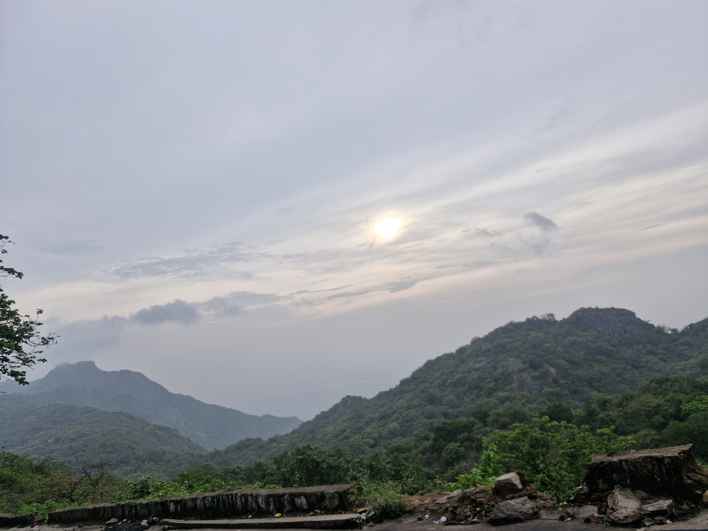

1. Tod rock
One of the most famous pace in the mount-abu stone structure
Time: 2 hours
Explore historic Temples, beautiful gardens, and cultural landmarks on this walking trail.

Information about some stops
One of the most famous pace in the mount-abu stone structure
Naki lake it view is osam in the evening
Amazing view of sun set
Highest peak ponit of the Rajasthan
One of the most famous historic temple in the world
Disclaimer: This is a fictional walking route created for training purposes. All distances, timings, and locations are illustrative.